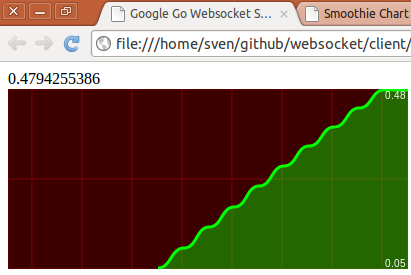
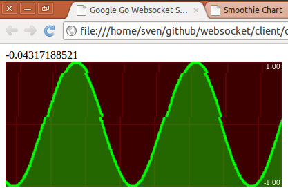

Google Go Websocket server and Smoothie Charts client
Recently I enjoyed getting my hands dirty with Google Go a fairly new GPL targeted at systems programming. To get to know the language a little better I came up with the idea to program a websocket server that sends out some data to a browser that visualizes those in a chart. I got the inspiration for this from Joe Walnes blog entry about Smoothie Charts. Smoothie Charts is a little JavaScript library to visualize real-time data in a HTML5 canvas.
The websocket server implementation is pretty simple as Go already has some build-in websocket support. The server sends out the sine function with a value range from -1 to +1 to the client. The result can be seen in the following pictures and all source code be downloaded from github: https://github.com/svenlange/websocket
Sinus Smoothie Chart. New value every 500ms. Alternation +0.05

Sinus Smoothie Chart under heavy load. New value every 5ms. Alternation +0.01

The second pictures sine curve looks a bit creepy because my computers CPU utilization was at a maximum and somehow my computer was not able to take a better screenshot. The chart was smoother on my monitor.
This setup/technology could maybe be used to visualize real-time stock exchange trends or the current bandwidth utilization in a data center etc. within a browser. Very nice.
Thanks to Gary Burd for his websocket example. It helped me to get my job done.
Date published: 2011-02-20
Date modified: 2011-02-20
Keywords: Frontend, Server, Google Go, HTML5, Smoothie Charts, Websocket